TD1 - Entering the Hadoop ecosystem
Log analysis is one of the first use cases enabled by Big Data Processing, from parsing web crawlers logs to analyzing customer behavior on websites by rebuilding their sessions from Apache logs.
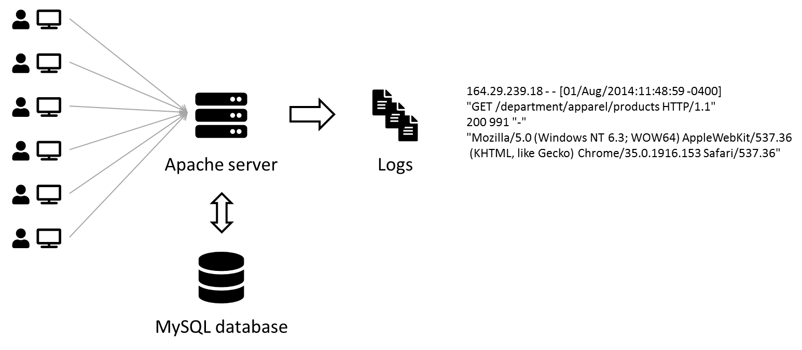
In this practice session, we will replicate a (albeit smaller) Big Data pipeline to collect and visualize Apache logs.
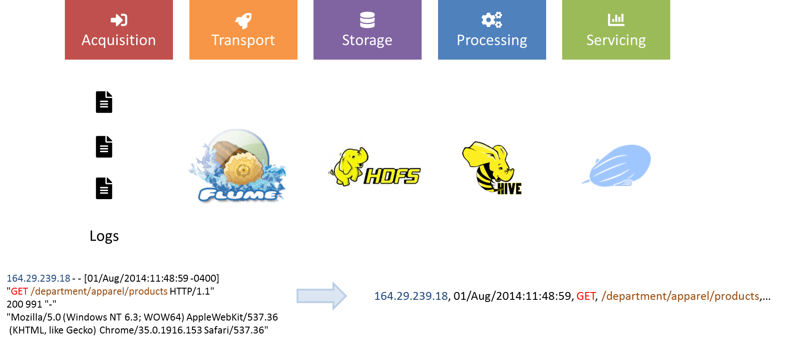
Saving some memory using Terminal
This tutorial makes heavy use of Hive and Zeppelin to process data. If you are using less than 8 Go of RAM for the virtual machine, try to not use Ambari for this session and only use the terminal to upload and manage data in HDFS. Ambari consumes a lot of memory when acessed so this saves some resources.
- The first part of the tutorial will focus on managing our cluster through Ambari and playing with some Hadoop features.
- We will then solve the log analysis problem.
Objectives
- Monitor the status of your cluster through the Ambari interface
- Upload data into HDFS - Hadoop Distributed File System
- Run MapReduce jobs on data in HDFS
- Run Hive jobs on data in HDFS
- Structure Apache logs with Hive and regex
- Build a data dashboard with Zeppelin
- Ingest Apache logs into HDFS in realtime with Flume
1. Monitor your cluster with the Ambari interface
Exercise - Access the Ambari Dashboard
-
There are 2 ways to access the Ambari UI:
- Open a web browser to http://localhost:8888 to be greeted with the Hortonworks Data Platform dashboard. Click on
Launch Dashboardin the left column to pop-up a new browser to Ambari. - You can also go to http://localhost:8080 directly.
- Open a web browser to http://localhost:8888 to be greeted with the Hortonworks Data Platform dashboard. Click on
-
Enter the following credentials on the form: raj_ops/raj_ops. You will arrive on the Ambari dashboard, your cockpit into the Hadoop platform.
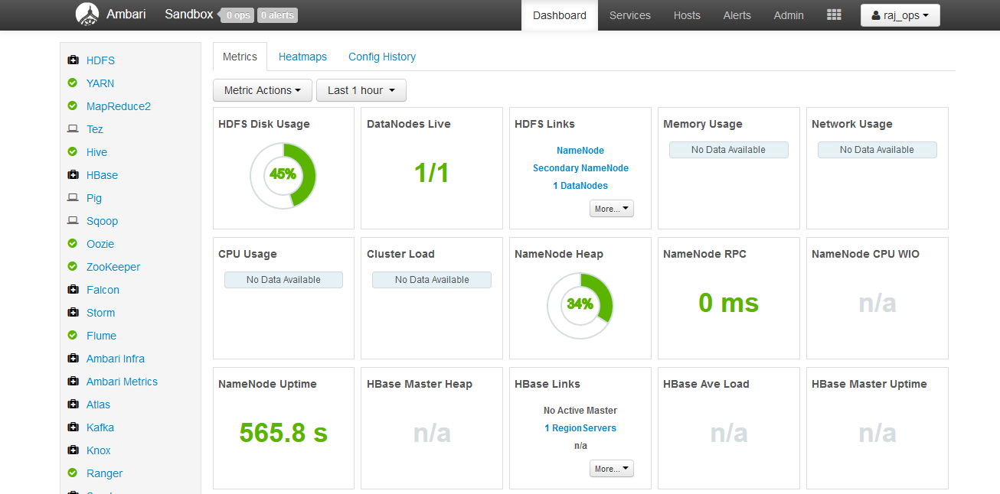
- In the left sidebar, you should recognize some of the Hadoop services presented in the lecture.
- The main area displays KPIs to monitor the platform. Apart from Supervisors Live, there should not have too many red flags.
- The topbar has a few links to running services, list of hosts and an admin portal.
- Some links go to
http://sandbox.hortonworks.com, replace that byhttp://localhostif you want to check them out.
Questions on the Ambari dashboard
- How many Namenodes/Datanodes are currently running in the virtual machine ?
- What is the jdbc URL to connect to the Hive server ?
- The YARN cluster comprises of a Resource Manager and a Node Manager. How do you restart all Node Managers ?
2. Uploading files to HDFS
There are two ways to upload data to HDFS: from the Ambari Files View and from a terminal.
In this section we will:
- Upload the
datafolder of the project (which you can find here) into HDFS through the Ambari Files View - SSH into the virtual machine, download the files and then upload the titanic.csv file in HDFS using the command line.
2.1 Using the Ambari Files View
Question
Find the Ambari Files View.
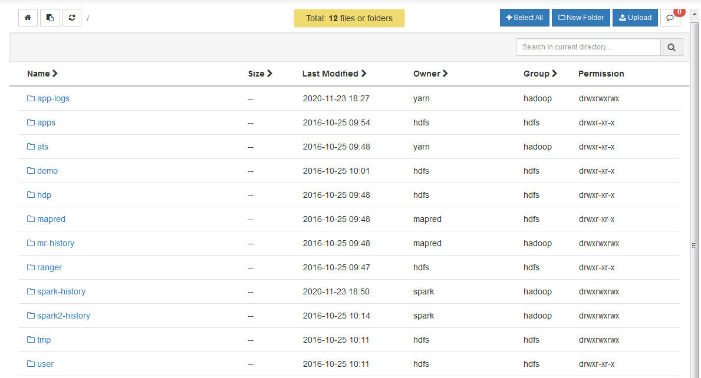
Exercise - Upload 2 files to a folder in HDFS
- Create a new folder
rootinside/user. - Change the permissions of the folder
/user/rootto addgroupandotherwrite/execute permissions. This will prove necessary so therootuser can actually access its own folder from the command-line. If done correctly, see image below, the permissions should bedrwxrwxrwx.- Don't know about Unix permissions? Wikipedia link
- Enter the
/user/rootfolder, create a newdatafolder and uploadgeolocation.csvandtrucks.csvinside. You should have/user/root/data/geolocation.csvanduser/root/data/trucks.csvby the end.
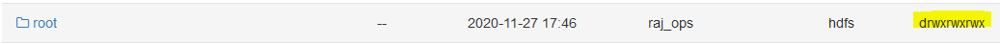
We now have data distributed on nodes in HDFS (even if there's only one node)!
- geolocation.csv – This is the collected geolocation data from the trucks. It contains records showing truck location, date, time, type of event, speed, etc.
- trucks.csv – This is data was exported from a relational database and it shows information on truck models, driverid, truckid, and aggregated mileage info.
Tip
- Imagine the Hadoop Data Platform is actually a remote cluster of machines, so when you upload a big file in HDFS it gets cut into blocks of 64MB and spread accross multiple DataNodes, and the NameNode keeps a reference for this file in HDFS to all blocks in the cluster. It's transparent to us though.
- The URL
/user/root/data/geolocation.csvin Ambari Views is actuallyhdfs:///user/root/data/geolocation.csv. Thehdfs:///specifies to look into the HDFS cluster instead of locally when using a HDFS client. hdfs:///is a shortcut forhdfs://<host>:<port>/so you won't need to specifyhdfs://sandbox.hortonworks.com:8020/every time.
Recap:
- Upload the
datafolder of the project (which you can find here) into HDFS through the Ambari Files View - SSH into the virtual machine, download the files and then upload the titanic.csv file in HDFS using the command line.
2.2 Using the Command-line
In this section, we will use the command-line to check that HDFS indeed has our data files in hdfs:///user/root, then we will upload the titanic.csv.
Exercise - Connect into the VM with Putty
- Download PuTTY on Windows. You may already have it.
- SSH into localhost on port 2222. To do this, enter
localhostas Hostname,2222as Port and clickOpen- On your first attempt, it will be asked to change your root password. Type the current password again then change to a long password. Just remember it for future sessions
 .
.
- On your first attempt, it will be asked to change your root password. Type the current password again then change to a long password. Just remember it for future sessions
- The credentials are root/hadoop.
In case you have a problem with Putty
- On Windows, if you have another favorite terminal like Windows Terminal or Cmder, feel free to use them. If you're on Mac or Unix, the following should work natively.
- Open a terminal and directly ssh into the virtual machine with
ssh -p 2222 root@localhost. - You can also connect to a shell in the Virtual machine with your browser in http://localhost:4200. Credentials are root/hadoop.
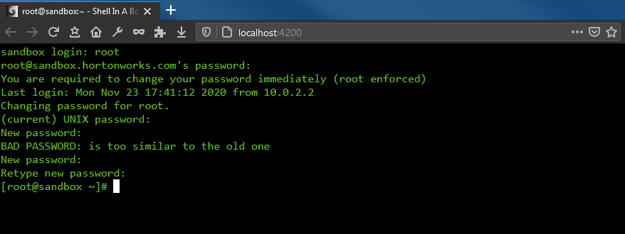
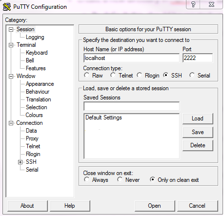
Exercise - Run your first HDFS command
Now that you are connected to your virtual machine:
- Run the
hdfscommand from the terminal. This should output the help from the command line. - Display the version of HDFS with
hdfs version.
Output
ssh -p 2222 root@localhost
Could not create directory '/home/.../.ssh'.
The authenticity of host '[localhost]:2222 ([127.0.0.1]:2222)' can't be established.
Are you sure you want to continue connecting (yes/no)? yes
Failed to add the host to the list of known hosts (/home/.../.ssh/known_hosts).
root@localhost's password:
Last login: Sun Nov 29 13:19:19 2020 from 10.0.2.2
[root@sandbox ~]# hdfs
Usage: hdfs [--config confdir] [--loglevel loglevel] COMMAND
where COMMAND is one of:
dfs run a filesystem command on the file systems supported in Hadoop.
classpath prints the classpath
namenode -format format the DFS filesystem
secondarynamenode run the DFS secondary namenode
namenode run the DFS namenode
journalnode run the DFS journalnode
zkfc run the ZK Failover Controller daemon
datanode run a DFS datanode
dfsadmin run a DFS admin client
envvars display computed Hadoop environment variables
haadmin run a DFS HA admin client
fsck run a DFS filesystem checking utility
balancer run a cluster balancing utility
jmxget get JMX exported values from NameNode or DataNode.
mover run a utility to move block replicas across
storage types
oiv apply the offline fsimage viewer to an fsimage
oiv_legacy apply the offline fsimage viewer to an legacy fsimage
oev apply the offline edits viewer to an edits file
fetchdt fetch a delegation token from the NameNode
getconf get config values from configuration
groups get the groups which users belong to
snapshotDiff diff two snapshots of a directory or diff the
current directory contents with a snapshot
lsSnapshottableDir list all snapshottable dirs owned by the current user
Use -help to see options
portmap run a portmap service
nfs3 run an NFS version 3 gateway
cacheadmin configure the HDFS cache
crypto configure HDFS encryption zones
storagepolicies list/get/set block storage policies
version print the version
Most commands print help when invoked w/o parameters.
[root@sandbox ~]# hdfs version
Hadoop 2.7.3.2.5.0.0-1245
Subversion git@github.com:hortonworks/hadoop.git -r cb6e514b14fb60e9995e5ad9543315cd404b4e59
Compiled by jenkins on 2016-08-26T00:55Z
Compiled with protoc 2.5.0
From source with checksum eba8ae32a1d8bb736a829d9dc18dddc2
This command was run using /usr/hdp/2.5.0.0-1245/hadoop/hadoop-common-2.7.3.2.5.0.0-1245.jar
Exercise - Moving the HDFS data folder to geoloc
The hdfs dfs command gives you access to all commands to interact with files in HDFS. Then hdfs dfs <command> -h gives you the command manual.
-
List all folders inside HDFS with
hdfs dfs -ls.- The command
hdfs dfs -lswill take you tohdfs:///user/root.hdfsuses your UNIX username to go to the HDFS home location. Since you're connected usingrootin the Virtual Machine, it connects by default tohdfs:///user/root.
- The command
-
Rename the
hdfs:///user/root/datafolder tohdfs:///user/root/geolocwithhdfs dfs -mv.- Remember by default that
hdfs dfs -mv data geolocis equivalent tohdfs dfs -mv hdfs:///user/root/data hdfs:///user/root/geoloc.
- Remember by default that
Exercise - Download the Titanic dataset into HDFS
- Use the
wgetcommand to download the Titanic dataset in the filesystem of your virtual machine. - Verify the file is present with
lsand withhead -n 5 titanic.csv.
To copy files from your local machine to HDFS, the command is hdfs dfs -copyFromLocal <local_file> <path_in_HDFS>.
- Build the
hdfs:///user/root/testHDFS folder withhdfs dfs -mkdir /user/root/test/user/root/testin the context of the target of a HDFS command will behdfs:///user/root/test
- Copy
titanic.csvfile from the local VM into HDFS at URLhdfs:///user/root/test. - Check via Ambari Files that all is well
Exercise - Changing permissions for hdfs:///tmp
- Currently, the
hdfs:///tmpfolder doesn't have permissions for everyone to write in. In the Hadoop ecosystem,rootis not the superuser buthdfsis. So we need to be in thehdfsuser before running set permissions. Run the following script.
sudo su -
su hdfs
hdfs dfs -chmod -R 777 /tmp
exit # necessary to exit the hdfs user, back to root
Recap
- Upload the
datafolder of the project (which you can find here) into HDFS through the Ambari Files View - SSH into the virtual machine, download the files and then upload the titanic.csv file in HDFS using the command line.
Output
[root@sandbox ~]# hdfs dfs -ls /user/root/geoloc
Found 2 items
-rw-r--r-- 3 raj_ops hdfs 526677 2020-11-23 17:56 /user/root/geoloc/geolocation.csv
-rw-r--r-- 3 raj_ops hdfs 61378 2020-11-23 17:56 /user/root/geoloc/trucks.csv
[root@sandbox ~]# hdfs dfs -ls /user/root/test
Found 1 items
-rw-r--r-- 1 root hdfs 60301 2020-11-24 14:59 /user/root/test/titanic.csv
[root@sandbox ~]# hdfs dfs -ls /tmp
Found 6 items
drwxrwxrwx - raj_ops hdfs 0 2020-11-27 16:10 /tmp/.pigjobs
drwxrwxrwx - raj_ops hdfs 0 2020-11-27 16:09 /tmp/.pigscripts
drwxrwxrwx - raj_ops hdfs 0 2020-11-27 16:09 /tmp/.pigstore
drwxrwxrwx - hdfs hdfs 0 2016-10-25 07:48 /tmp/entity-file-history
drwxrwxrwx - ambari-qa hdfs 0 2020-11-27 16:46 /tmp/hive
drwx------ - root hdfs 0 2020-11-27 15:38 /tmp/temp890518890
3. Running a MapReduce job
Time to compute stuff on data in HDFS. You should be using a command-line as the root user.
Exercise - Run a distributed Pi in MapReduce
- Run the Pi example :
yarn jar /usr/hdp/current/hadoop-mapreduce-client/hadoop-mapreduce-examples.jar pi 4 100. - Find the job in the Ambari Resource Manager UI.
- Find the result of the job in the log of the job. Don't forget to replace any
http://sandbox.hortonworks.combyhttp://localhost. - Looking at the help of the function below, what would be
nMaps?nSamples? How can you make the Pi result more precise?[root@sandbox ~] yarn jar /usr/hdp/current/hadoop-mapreduce-client/hadoop-mapreduce-examples.jar pi Usage: org.apache.hadoop.examples.QuasiMonteCarlo <nMaps> <nSamples>
Exercise - Compute wordcount on files in HDFS
Now we want to run a wordcount on a file inside HDFS, let's run it on files inside hdfs:///user/root/geoloc/.
- Run
yarn jar /usr/hdp/current/hadoop-mapreduce-client/hadoop-mapreduce-examples.jar wordcount geoloc/geolocation.csv output.- The command will not work if
hdfs:///user/root/outputalready exists, in that case remove the folder withhdfs dfs -rm -r -f output.
- The command will not work if
- Examine the
hdfs:///user/root/outputfolder. You can usehdfs dfs -ls outputandhdfs dfs -cat output/part-r-00000.- Can you explain how
part-r-00000appears ?
- Can you explain how
- You can edit the number of reducers running with the flag
-D mapred.reduce.tasks=10at the correct location in the command. Edit the previous command to change the number of reducers working and output this in a new folderoutput2. Examine theoutput2folder. Can you note a difference with the previous execution ?
Do you want to know what is the Java MapReduce code in the JAR?
I am not going to have you write Java code to compute MapReduce, but in case you are wondering:
import java.io.IOException;
import java.util.*;
import org.apache.hadoop.fs.Path;
import org.apache.hadoop.conf.*;
import org.apache.hadoop.io.*;
import org.apache.hadoop.mapreduce.*;
import org.apache.hadoop.mapreduce.lib.input.FileInputFormat;
import org.apache.hadoop.mapreduce.lib.input.TextInputFormat;
import org.apache.hadoop.mapreduce.lib.output.FileOutputFormat;
import org.apache.hadoop.mapreduce.lib.output.TextOutputFormat;
public class WordCount {
public static class Map extends Mapper<LongWritable, Text, Text, IntWritable> {
private final static IntWritable one = new IntWritable(1);
private Text word = new Text();
public void map(LongWritable key, Text value, Context context) throws IOException, InterruptedException {
String line = value.toString();
StringTokenizer tokenizer = new StringTokenizer(line);
while (tokenizer.hasMoreTokens()) {
word.set(tokenizer.nextToken());
context.write(word, one);
}
}
}
public static class Reduce extends Reducer<Text, IntWritable, Text, IntWritable> {
public void reduce(Text key, Iterator<IntWritable> values, Context context)
throws IOException, InterruptedException {
int sum = 0;
while (values.hasNext()) {
sum += values.next().get();
}
context.write(key, new IntWritable(sum));
}
}
public static void main(String[] args) throws Exception {
Configuration conf = new Configuration();
Job job = new Job(conf, "wordcount");
job.setOutputKeyClass(Text.class);
job.setOutputValueClass(IntWritable.class);
job.setMapperClass(Map.class);
job.setReducerClass(Reduce.class);
job.setInputFormatClass(TextInputFormat.class);
job.setOutputFormatClass(TextOutputFormat.class);
FileInputFormat.addInputPath(job, new Path(args[0]));
FileOutputFormat.setOutputPath(job, new Path(args[1]));
job.waitForCompletion(true);
}
}
4. Running SQL jobs with Hive
We as analysts are much more used to using SQL to process our data. The role of datawarehouse package in the Hadoop ecosystem goes to Hive.
In today's world, SQL skills are still very important and one of the primary languages to manipulate data. So always work on your SQL.
Exercise - Access the Hive terminal
- you can start a Hive shell from your terminal/command-line, with the
hivecommand. This is dedicated to simple SQL queries or operational management. - or, there's a dedicated Hive View in Ambari, with some visualization capabilities.
Exercise - Time to analyze the geolocations data
- Move the
trucks.csvfile outside of thehdfs:///user/root/geolocfolder tohdfs:///user/root/trucks. - Create an external table for the
hdfs:///user/root/geolocfolder which containsgeolocation.csv.CREATE EXTERNAL TABLE geolocation (truckid STRING, driverid STRING, event STRING, latitude DOUBLE, longitude DOUBLE, city STRING, state STRING, velocity DOUBLE, event_ind BIGINT, idling_ind BIGINT) ROW FORMAT DELIMITED FIELDS TERMINATED BY ',' LOCATION '/user/root/geoloc'; - Visualize the first rows of the table
SELECT truckid FROM geolocation LIMIT 10;
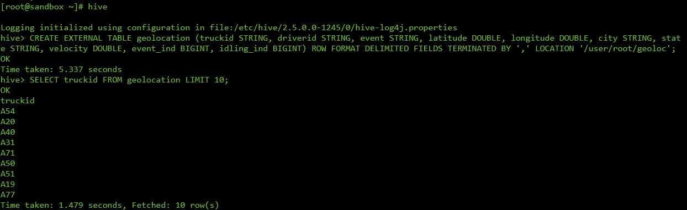
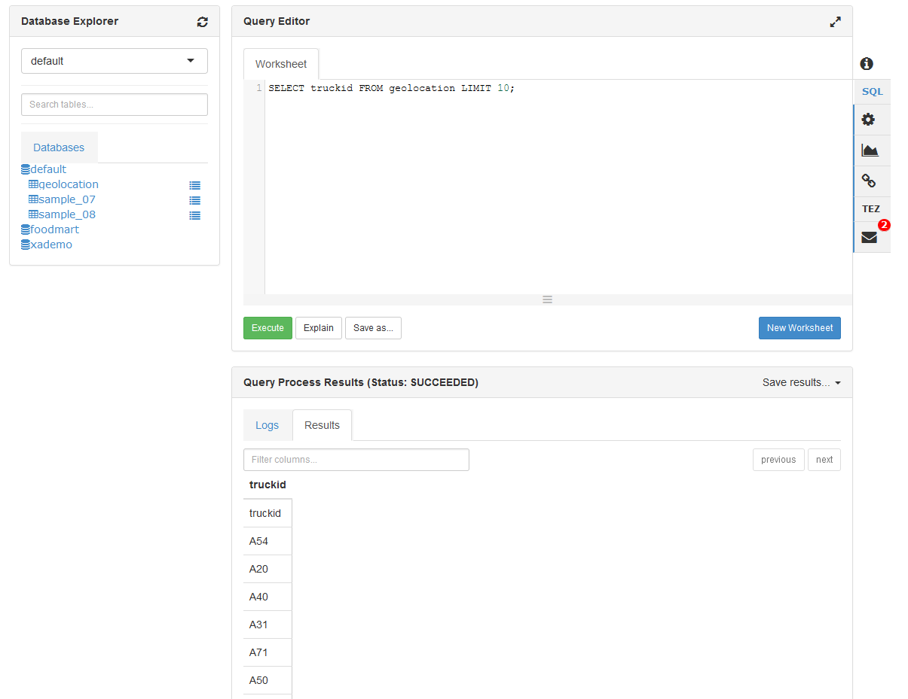
The way Hive works is every file inside the geoloc folder is read by Hive as data in the table. This is why we had to move out the trucks.csv file.
The commands created a Hive table pointing to a HDFS location. You can drop it, it won't destroy the data in HDFS.
Question
- Are you again able to count the list of distinct cities visited per truckid, and mean velocity per truckid ?
- On the Ambari View, count the number of distinct cities per trucks and display it on a bar chart.
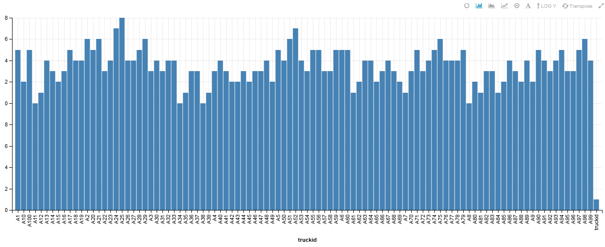
5. Structuring Apache logs with Hive and Regex
5.1 Upload data to HDFS
Before building the whole pipeline, let's have a look at a sample of Apache logs.
164.29.239.18 - - [01/Aug/2014:11:48:59 -0400] "GET /department/apparel/products HTTP/1.1" 200 991 "-" "Mozilla/5.0 (Windows NT 6.3; WOW64) AppleWebKit/537.36 (KHTML, like Gecko) Chrome/35.0.1916.153 Safari/537.36"
A sample of Apache logs is available here in the access.log.2.zip file. We will upload this data into HDFS, parse it using an external Hive table over it and run some SQL queries.
Exercise - Upload logs to HDFS
- Download and unzip the folder, locally or in your virtual machine depending on how you want to upload the data in HDFS.
- Upload the data in HDFS, at the location
/user/root/access. You should end with/user/root/access/access.log.2.
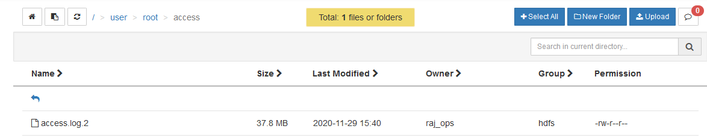
Take a look at the end of the file in HDFS, using the tail command in HDFS in the terminal.
[root@sandbox ~]# hdfs dfs -tail access/access.log.2
6.1; WOW64; rv:30.0) Gecko/20100101 Firefox/30.0"
64.232.194.248 - - [14/Jun/2014:23:43:32 -0400] "GET /support HTTP/1.1" 200 887 "-" "Mozilla/5.0 (Windows NT 6.1; rv:30.0) Gecko/20100101 Firefox/30.0"
138.9.185.141 - - [14/Jun/2014:23:43:32 -0400] "GET /department/golf HTTP/1.1" 200 1075 "-" "Mozilla/5.0 (Windows NT 6.3; WOW64) AppleWebKit/537.36 (KHTML, like Gecko) Chrome/35.0.1916.153 Safari/537.36"
152.208.225.65 - - [14/Jun/2014:23:43:32 -0400] "GET /department/golf HTTP/1.1" 200 1358 "-" "Mozilla/5.0 (Windows NT 6.1) AppleWebKit/537.36 (KHTML, like Gecko) Chrome/35.0.1916.153 Safari/537.36"
84.246.94.164 - - [14/Jun/2014:23:43:32 -0400] "GET /department/fitness/category/tennis%20&%20racquet HTTP/1.1" 200 907 "-" "Mozilla/5.0 (Windows NT 6.1; WOW64; rv:30.0) Gecko/20100101 Firefox/30.0"
167.228.157.189 - - [14/Jun/2014:23:43:32 -0400] "GET /department/outdoors HTTP/1.1" 200 2166 "-" "Mozilla/5.0 (Macintosh; Intel Mac OS X 10_9_3) AppleWebKit/537.36 (KHTML, like Gecko) Chrome/35.0.1916.153 Safari/537.36"
5.2 Build a Hive table over the log file
In the previous tutorial, we created a Hive table over CSV files using the keywords ROW FORMAT DELIMITED FIELDS TERMINATED BY ','. The format of the file in HDFS, which Hive will parse on-demand, must be specified at table creation.
Here we will use a regex to extract all the information we need from the log files. To enable parsing files in HDFS using regex with Hive, we use a specific SerDe (for serializer/deserializer) ROW FORMAT SERDE 'org.apache.hadoop.hive.contrib.serde2.RegexSerDe'.
This SERDE is not provided by default, we will need to register a hive-contrib.jar plugin which contains the class. Otherwise you will get Caused by: org.apache.hadoop.hive.ql.metadata.HiveException: java.lang.ClassNotFoundException: Class org.apache.hadoop.hive.contrib.serde2.RegexSerDe not found exceptions.
Let's try this:
Exercise - Configuring Hive
- Open a terminal to your Virtual Machine.
- Open a Hive command line:
hive. - Add the
hive-contrib.jarJAR:
ADD JAR /usr/hdp/current/hive-client/lib/hive-contrib.jar;
Exercise - Creating an external Hive table
- Create an external Hive table
intermediate_access_logs(copy-paste the following command):CREATE EXTERNAL TABLE intermediate_access_logs ( ip STRING, log_date STRING, method STRING, url_site STRING, http_version STRING, code1 STRING, code2 STRING, dash STRING, user_agent STRING) ROW FORMAT SERDE 'org.apache.hadoop.hive.contrib.serde2.RegexSerDe' WITH SERDEPROPERTIES ( 'input.regex' = '([^ ]*) - - \\[([^\\]]*)\\] "([^\ ]*) ([^\ ]*) ([^\ ]*)" (\\d*) (\\d*) "([^"]*)" "([^"]*)"', 'output.format.string' = "%1$$s %2$$s %3$$s %4$$s %5$$s %6$$s %7$$s %8$$s %9$$s") LOCATION '/user/root/access';
Now whenever you run a SQL query on intermediate_access_logs, Hive will run a MapReduce job by first parsing all files in the /user/root/access with the provided regex, then run your query.
Output
hive> DESCRIBE intermediate_access_logs;
OK
ip string from deserializer
log_date string from deserializer
method string from deserializer
url_site string from deserializer
http_version string from deserializer
code1 string from deserializer
code2 string from deserializer
dash string from deserializer
user_agent string from deserializer
Time taken: 0.997 seconds, Fetched: 9 row(s)
hive> SELECT ip, log_date, user_agent from intermediate_access_logs LIMIT 5;
OK
79.133.215.123 14/Jun/2014:10:30:13 -0400 Mozilla/5.0 (Windows NT 6.1; WOW64) AppleWebKit/537.36 (KHTML, like Gecko) Chrome/35.0.1916.153 Safari/537.36
162.235.161.200 14/Jun/2014:10:30:13 -0400 Mozilla/5.0 (Macintosh; Intel Mac OS X 10_9_3) AppleWebKit/537.76.4 (KHTML, like Gecko) Version/7.0.4 Safari/537.76.4
39.244.91.133 14/Jun/2014:10:30:14 -0400 Mozilla/5.0 (Macintosh; Intel Mac OS X 10_9_3) AppleWebKit/537.36 (KHTML, like Gecko) Chrome/35.0.1916.153 Safari/537.36
150.47.54.136 14/Jun/2014:10:30:14 -0400 Mozilla/5.0 (Macintosh; Intel Mac OS X 10_9_3) AppleWebKit/537.36 (KHTML, like Gecko) Chrome/35.0.1916.153 Safari/537.36
217.89.36.129 14/Jun/2014:10:30:14 -0400 Mozilla/5.0 (Windows NT 6.1; WOW64; rv:30.0) Gecko/20100101 Firefox/30.0
Time taken: 0.29 seconds, Fetched: 5 row(s)
hive>
Exercise - Transforming the raw Hive table
- Running a query on
intermediate_access_logswill parse files with regex every time, which is time consuming. Create a newclean_access_logstable with the output forintermediate_access_logsas content.- We also optimize the table storage with the ORC format. Using ORC files improves performance when Hive is reading, writing, and processing data.
- Then build a smaller table so you can experiment on it before running on the full dataset:
CREATE TABLE clean_access_logs STORED AS ORC AS SELECT * FROM intermediate_access_logs;
CREATE TABLE sample_access_logs STORED AS ORC AS SELECT * FROM clean_access_logs LIMIT 1000;
You're now free to work on the clean_access_logs or sample_access_logs tables
SQL questions
Choose 1-2 questions to answer:
- Can you count the number of occurences for each IP address ?
- Display how many times each product has been bought
- What percentage of IP addresses went to checkout their basket ?
- If you case the date as a Date you should be able to build a web journey of an IP address on the website. For all IP adresses that went to checkout, compute the number of products each has bought before.
5.3 Visualize the data with Zeppelin, the Big Data Notebook
Apache Zeppelin is a Web-based notebook for interactive data analytics and collaborative documents. You can plugin multiple interpreters to run different Big Data engine inside, by default Hive JDBC and Spark are already configured to run.
Exercise - Zeppelin usage
- Open
http://localhost:9995for a first peek at Zeppelin. - Create a new note, write some Markdown in the first cell with
%mdas a first line to choose the Markdown interpreter, and run the cell: - See what happens when you toggle the
defaultview tosimpleandreport. - Each cell has its own set of settings too. For example, change the width of the first cell to 6:
- Create a new cell, set the interpreter to
Hive JDBCwith%jdbc(hive)and run a SQL query againstclean_access_logsagain. - Do you see that the
Hive JDBCcell results have a toolbar for displaying graphs? Play with it a bit then try to replicate the following notebook inreportview, with a cell for counting the number of occurences for a few ip addresses.
All Zeppelin screenshots
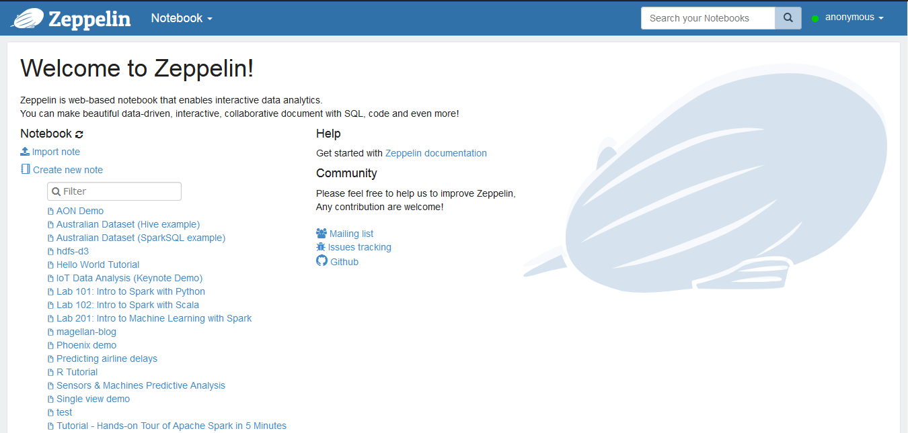
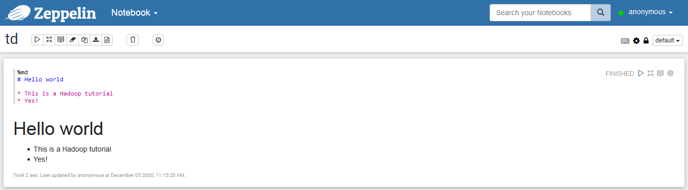
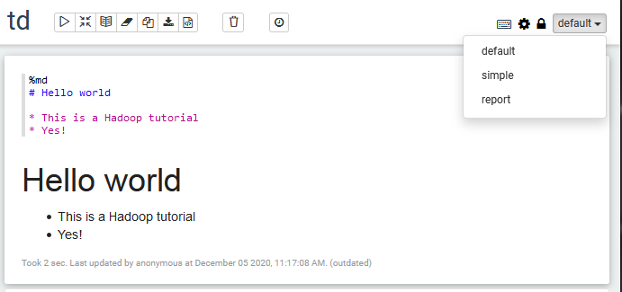
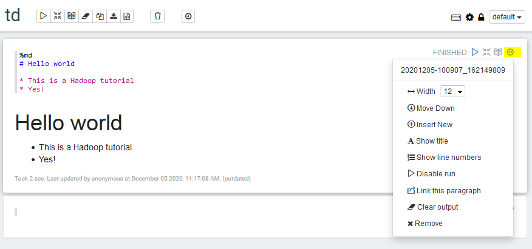
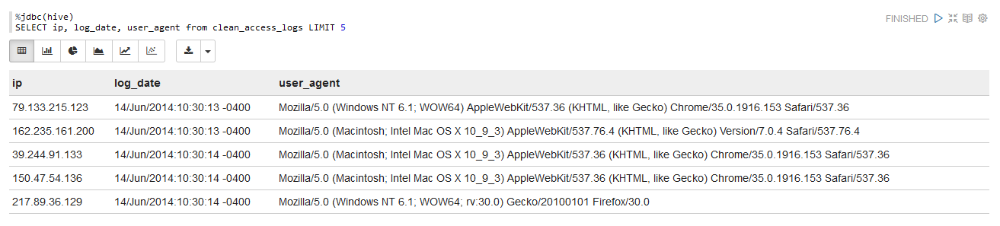
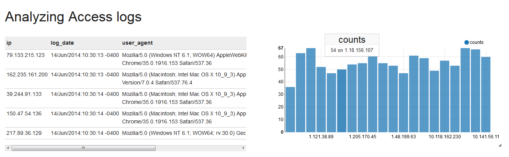
6. Generating logs with Python
Instead of installing an Apache server and hitting it with HTTP requests for new logs, we use a Python script to randomly generate logs into a log file.
Exercise - Run Python codeto generate logs in realtime
- Copy the
gen_logsfolder to the virtual machine and browse insidecd gen_logs.- Since
gitis installed in the machine, you can directly clone the full project withhttps://github.com/andfanilo/lyon2.git
- Since
- Add execution permissions to the Python and Shell files inside
gen_logs:chmod +x *.shchmod +x */*.py - Run Python simulation:
./start_logs.sh- Logs are tailed into
logs/access.log. In the following sections we should send lines appended to this file into HDFS. - You can follow the produced logs with
./tail_logs.sh.
- Logs are tailed into
- Kill the log generation with
./stop_logs.sh.
7. Ingesting data in HDFS with Flume
Apache Flume is a distributed, reliable, and available system for efficiently collecting, aggregating and moving large amounts of log data from many different sources to a centralized data store.
It follows a simple yet extensible model of source > channel > sink configured through a configuration file.

Using Flume, we will capture generated logs from Python, simulating customer interaction with the ecommerce website, and aggregate them into HDFS for consolidated analysis through Hive/Zeppelin. This is a very common scenario you can read more about here.
7.1 Test Flume with a simple logging of telnet info
In this first section, we follow the Flume quickstart and build a Flume agent which routes any network information sent over the wire in port 44444, into a Java logger.
Exercise - Configure Flume
- Configure Flume by copying flume/example.conf into the virtual machine.
Help me!
Here's a command to copy-paste multiline content directly into example.conf in a terminal:
cat > example.conf << EOF
# example.conf: A single-node Flume configuration
# Name the components on this agent
a1.sources = r1
a1.sinks = k1
a1.channels = c1
# Describe/configure the source
a1.sources.r1.type = netcat
a1.sources.r1.bind = localhost
a1.sources.r1.port = 44444
# Describe the sink
a1.sinks.k1.type = logger
# Use a channel which buffers events in memory
a1.channels.c1.type = memory
a1.channels.c1.capacity = 1000
a1.channels.c1.transactionCapacity = 100
# Bind the source and sink to the channel
a1.sources.r1.channels = c1
a1.sinks.k1.channel = c1
EOF
Exercise - Run Flume
- Run the Flume agent:
flume-ng agent --conf conf --conf-file example.conf --name a1 -Dflume.root.logger=INFO,console
Exercise - Test Flume is running
- Connect another terminal to your Virtual Machine, so you have one terminal with the Flume agent running and this second terminal to send network commands. Connect to localhost on port 44444 with
telnet localhost 44444. Then send some text.
Output
Your telnet terminal should have:
[root@sandbox ~]# telnet localhost 44444
Trying ::1...
telnet: connect to address ::1: Connection refused
Trying 127.0.0.1...
Connected to localhost.
Escape character is '^]'.
coucou
OK
hadoop
OK
[root@sandbox ~]# flume-ng agent --conf conf --conf-file example.conf --name a1 -Dflume.root.logger=INFO,console
20/12/06 11:02:40 INFO node.PollingPropertiesFileConfigurationProvider: Configuration provider starting
20/12/06 11:02:40 INFO node.PollingPropertiesFileConfigurationProvider: Reloading configuration file:example.conf
20/12/06 11:02:40 INFO conf.FlumeConfiguration: Added sinks: k1 Agent: a1
20/12/06 11:02:40 INFO conf.FlumeConfiguration: Processing:k1
20/12/06 11:02:40 INFO conf.FlumeConfiguration: Processing:k1
20/12/06 11:02:40 INFO conf.FlumeConfiguration: Post-validation flume configuration contains configuration for agents: [a1]
20/12/06 11:02:40 INFO node.AbstractConfigurationProvider: Creating channels
20/12/06 11:02:40 INFO channel.DefaultChannelFactory: Creating instance of channel c1 type memory
20/12/06 11:02:40 INFO node.AbstractConfigurationProvider: Created channel c1
20/12/06 11:02:40 INFO source.DefaultSourceFactory: Creating instance of source r1, type netcat
20/12/06 11:02:40 INFO sink.DefaultSinkFactory: Creating instance of sink: k1, type: logger
20/12/06 11:02:40 INFO node.AbstractConfigurationProvider: Channel c1 connected to [r1, k1]
20/12/06 11:02:40 INFO node.Application: Starting new configuration:{ sourceRunners:{r1=EventDrivenSourceRunner: { source:org.apache.flume.source.NetcatSource{name:r1,state:IDLE} }} sinkRunners:{k1=SinkRunner: { policy:org.apache.flume.sink.DefaultSinkProcessor@11d97d51 counterGroup:{ name:null counters:{} } }} channels:{c1=org.apache.flume.channel.MemoryChannel{name: c1}} }
20/12/06 11:02:40 INFO node.Application: Starting Channel c1
20/12/06 11:02:40 INFO instrumentation.MonitoredCounterGroup: Monitored counter group for type: CHANNEL, name: c1: Successfully registered new MBean.
20/12/06 11:02:40 INFO instrumentation.MonitoredCounterGroup: Component type: CHANNEL, name: c1 started
20/12/06 11:02:40 INFO node.Application: Starting Sink k1
20/12/06 11:02:40 INFO node.Application: Starting Source r1
20/12/06 11:02:40 INFO source.NetcatSource: Source starting
20/12/06 11:02:40 INFO source.NetcatSource: Created serverSocket:sun.nio.ch.ServerSocketChannelImpl[/127.0.0.1:44444]
20/12/06 11:04:54 INFO sink.LoggerSink: Event: { headers:{} body: 63 6F 75 63 6F 75 0D coucou. }
20/12/06 11:05:09 INFO sink.LoggerSink: Event: { headers:{} body: 68 61 64 6F 6F 70 0D hadoop. }
The two last lines are the most important, they are logged by the Flume sink.
- Close the Flume agent and telnet.
Question: go futher by replacing the logger sink with a HDFS sink
Using vi to edit the example.conf file (vi example.conf to enter edit mode, a to enter append mode and edit the text, ESC to exit edit mode, :wq <ENTER> to save and exit, :q! <ENTER> to exit without saving), look how to change the sink to HDFS sink and save the netcat commands into /user/root/netcat in HDFS for example.
Absolutely look for the answer on Google!
This example presented how to use Flume configuration to configure a Flume pipeline. In the next section we will build a configuration to tail the logs into HDFS.
7.2 Route Apache logs to HDFS with Flume
Time to build a configuration file to route Apache logs into HDFS.
We will use the following components:
- Source: exec
- Channel: memory
- Sink: HDFS (Hive should be possible too)
- Output in external Hive table
8. Improving your Zeppelin Dashboard
- You can add forms to a Zeppelin cell, so you can dynamically manipulate your Hive query.
- Build a graph to showcase the quantity of bought articles every 5 minutes, based on the Apache logs generated by the previous section.
Conclusion
In this tutorial, you deployed a full Big Data pipeline for ingesting simulation data from ecommerce activity into HDFS, ready for data analysis. This pipeline is fully scalable and distributed, so can be used from small to very large activity.
Take a break now, you deserve it